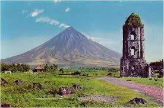

The photos and videos that I use in this website is from https://www.google.com/search?q=oceans+tourist+spot+found+in+luzon&tbm=isch&ved=2ahUKEwj32835yP6CAxW2TWwGHX9sAckQ2-cCegQIABAA&oq=oceans+tourist+spot+found+in+luzon&gs_lcp=CgNpbWcQAzoECCMQJ1CmB1jvK2DnMGgAcAB4AIABxAGIAZQRkgEEMC4xNJgBAKABAaoBC2d3cy13aXotaW1nwAEB&sclient=img&ei=bmFyZffsKrabseMP_9iFyAw&bih=601&biw=1242&rlz=1C1GCEA_enPH1031PH1031#imgrc=qEYhpEZ9RnuI5M, and "https://www.youtube.com/embed/BVMHtevJnZo, https://www.youtube.com/embed/8pXSRpmAuTc, https://www.youtube.com/embed/fV9r77SuKkg.

Luzon
Luzon, largest and most important island of the Philippines. It is the site of Manila, the nation’s capital and major metropolis, and of Quezon City. Located on the northern part of the Philippine archipelago, it is bounded by the Philippine Sea (east), Sibuyan Sea (south), and the South China Sea (west). To the north, the Luzon Strait separates Luzon from Taiwan.
Luzon
Luzon
Physical features of Luzon.
Philippines: Mayon Volcano
Philippines: Mayon Volcano
Mayon Volcano, Luzon, Philippines.
Most of the island, a roughly rectangular area, lies north of Manila in a north-south orientation, while south of Manila are two peninsulas, Batangas and Bicol, which extend south and southeast, giving Luzon its irregular shape. Luzon’s coastline, more than 3,000 miles (5,000 km) long, is indented by many fine bays and gulfs, including Lingayen Gulf and Manila Bay on the west and Lamon Bay and Lagonoy Gulf on the east. Luzon represents about one-third of the land area of the Philippines, and its greatest dimensions are 460 by 140 miles (740 by 225 km). There is a predominant north-south trend in its rivers and relief features. The important ranges are the Cordillera Central in the north; the Sierra Madre, following much of the east coast; and the Zambales Mountains on the central-western coast. Mount Pulog (9,612 feet [2,930 metres]) is the island’s highest peak. Isolated volcanic cones such as the near-perfect and still-active Mayon Volcano (8,077 feet [2,462 metres]) are on Bicol Peninsula. Taal Lake is a crater lake, and Laguna de Bay is the largest (344 square miles [891 square km]) lake in the Philippines. The major rivers are Cagayan, Abra, Agno, Pampanga, and Bicol.
Puerto Princesa’s Subterranean River or the Puerto Princesa Underground River is a New 7 Wonders of Nature holder and UNESCO World Heritage Sites lister. It’s a consistent placer in many travelers’ bucket lists, too.
The 8.2-kilometer-long Puerto Princesa Underground River is known for its cave formations, stunning limestone cliffs, and pristine waters. Here, you’ll feast your eyes on stunning sights while cruising on a paddleboat. Once you reach the caves, you’ll be in the company of stalactites, stalagmites, birds, bats, and fishes that inhabit the Underground River’s ecosystem.
From a stroll in the city in the previous entry, the next spot is an exhilarating and challenging hike up a 1500-meter-high attraction. The Batad Banaue Rice Terraces in Ifugao, Cordillera Region, which is more than 600 km from Manila, is a man-made, stair-like rice paddy that follows the steep slopes of the mountainside. It was also included in the UNESCO World Heritage List in 1995.
The intricate irrigation system of the Batad Rice Terraces allows it to still be used up to this day. To see the beauty of this old-time human ingenuity, you will have an hour-long hike up to the village of Batad. The panoramic views of pristine, unsoiled forestry will greet you next.
Visayas
Visayan Islands, island group, central Philippines. The Visayan group consists of seven large and several hundred smaller islands clustered around the Visayan, Samar, and Camotes seas. The seven main islands are Bohol, Cebu, Leyte, Masbate, Negros, Panay, and Samar. These islands and their smaller neighbours make up the central group of the Philippine archipelago.
Visayan Islands; the Philippines
Visayan Islands; the Philippines
High mountains characterize most of the Visayan Islands with the exception of Samar and Masbate, which are exceedingly hilly. Panay has extensive eastern plains where sugarcane and rice are farmed. Negros has large western plains on which sugarcane is grown. Corn (maize), coconuts, bananas, tobacco, abaca, and root crops also are widely grown, and fishing is also important in the Visayas.
White Beach Boracay is one of the top Boracay tourist spots and the most popular among Visayas beaches. It is 4 kilometers long and features very fine white sand and clear blue waters. White Beach is simply stunning and is the reason why Boracay has become famous around the world.
This beach is the main accommodation area, dining, and entertainment area for tourists visiting Boracay. The majority of Boracay resorts including hotels in Boracay for family are on White Beach, making it a popular choice for couples who want to have their honeymoon in the Philippines. This beach is also lined with numerous Boracay restaurants, cafes, Boracay bars and shops.
White Beach is also the main jumpoff point to many Boracay tours. Its surrounding water is normally full of people doing White Beach activities like banana boat riding, sailing, jet-skiing, and helmet diving in Boracay.
Despite being the tourist hub, White Beach does not fail to impress. A concrete pavement separates the business structures from the main sandy area. This separation creates plenty of space for people to relax on the soft, powdery sand.
White Beach has three sections called stations. These stations are geographical markers to help people locate business establishments.
The Chocolate Hills is one of the beloved attractions in Bohol. This site is a famous tourist spot in Visayas and is often considered one of the natural wonders of the world. This group of hills is extraordinary because of their sheer number, symmetry, and color.
Joining Chocolate Hills tours will let you get a glimpse of more than 1700 hills scattered around a 50 square kilometer land area and enjoy other Chocolate Hills activities. Green grass usually covers these hills. But during the dry season, the grass turns brown and gives the hills their famous chocolate brown color.
The hills come in different sizes, but from afar, they appear to be almost symmetrical. This symmetry is what adds to the site's remarkable appearance. They seemed artificial because they possess precise shapes.
Mindanao
Mindanao, island, the second largest (after Luzon) in the Philippines, in the southern part of the archipelago, surrounded by the Bohol, Philippine, Celebes, and Sulu seas. Irregularly shaped, it measures 293 miles (471 km) north to south and 324 miles (521 km) east to west. The island is marked by peninsulas and is heavily indented by the Davao and Moro gulfs in the south and by Iligan Bay in the north. The long, semicircular Zamboanga Peninsula (west) extends southwesterly toward the Sulu Archipelago and Borneo, and the Cotabato and Surigao peninsulas extend south and north, respectively.
Mindanao, Philippines
Mindanao, Philippines
Rugged, faulted mountains and volcanoes occur in many areas. Mount Apo, at 9,692 feet (2,954 metres), is an active volcano in the southern part of the central highlands; it is the highest peak in the Philippines. The island has narrow coastal plains, and broad, fertile basins and extensive swamps are formed by the Mindanao and Agusan river systems. Lake Lanao (Lake Sultan Alonto), created by a lava dam, has an area of 134 square miles (347 square km). The island has a marsh-game refuge and bird sanctuary. The rare Philippine eagle is found on Mindanao.
Cagayan De Oro (CDO) is known as the whitewater rafting capital of the Philippines. Among the many extreme sports in CDO, whitewater rafting is the most popular one for adrenaline junkies. It takes place along the Cagayan River, which spans up to 48 kilometers with over 59 rapids. The best time to try this sport is from July to December when the water current is strong. For a hassle-free adventure, book a Cagayan de Oro whitewater rafting package.
One of the majestic sights in the Surfing Capital of the Philippines, Siargao Island, is the Magpupungko Rock Pools. It has a stunning tidal rock pool with crystal clear emerald waters surrounded by striking rock formations. This crown jewel is only accessible during the low tide and is not visible when the tides are high.
Magpupungko Rock Pools is only a 45-minute drive away or 35KM away from the center of General Luna. The best way to enjoy the tide pools is to go cliff diving into its 3-meter deep refreshing blue waters. It is situated near Magpupungko Beach with towering coconut trees that offer adequate shade.
There are nearby restaurants along Magpupungko Beach. You may also drop by the nearby Sugba Lagoon, a gorgeous emerald lagoon with verdant mangroves in Del Carmen.